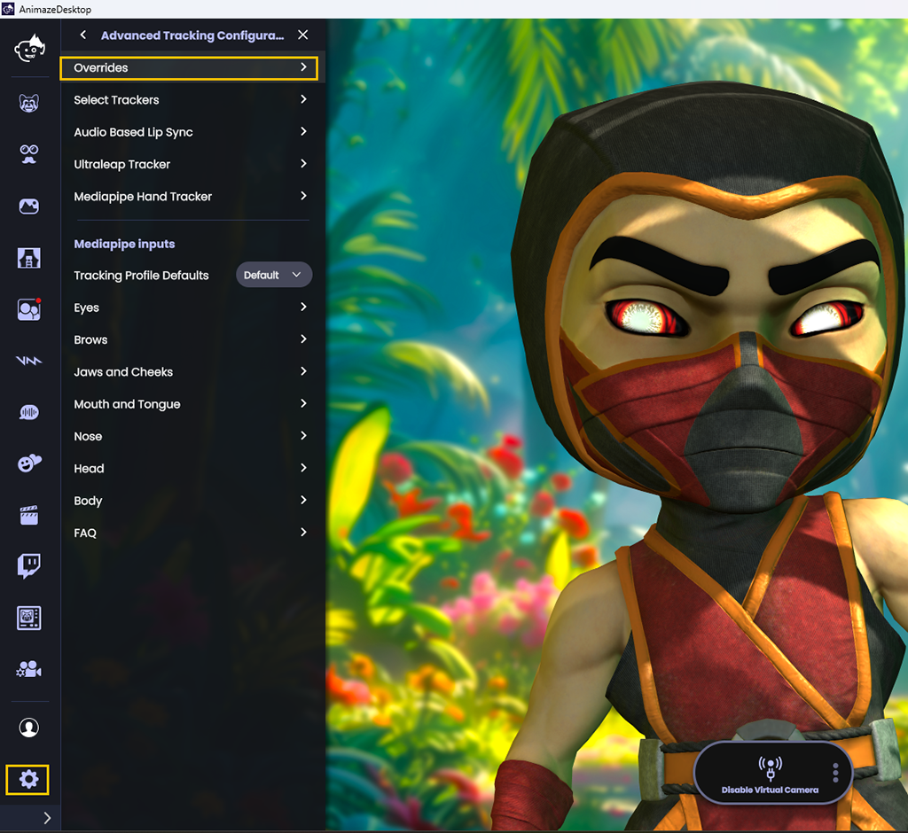
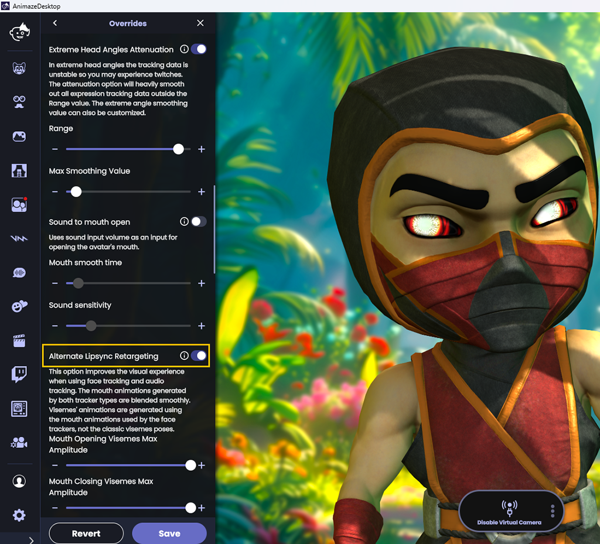

Animaze Desktop: How can I use the Alternate Audio-Based Lipsync Retargeting Mode?
This new approach aims to retarget audio-based data to avatar lips by using smaller, more discrete animation parts, instead of dedicated viseme poses. The result? Your avatar will have much smoother and more accurate lips animation!
This is particularly helpful for webcam-based face tracking and works really well when paired with the OVRL sound tracking library.
In order to take advantage of this option, you will need to hit the Settings button in the Animaze app, go to the Advanced Tracking Configuration and then to the Overrides section.
 
Turning on the retargeting will improve the visual experience when using face tracking and audio tracking.
To get a better understanding of the result, here’s a comparison that we made: